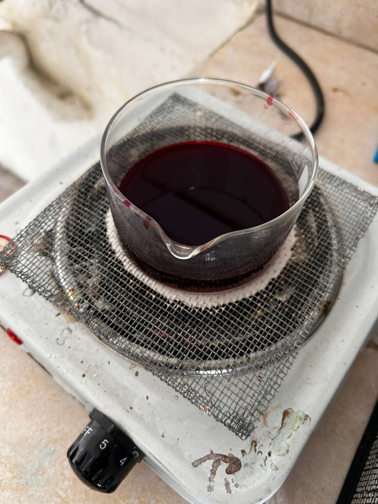
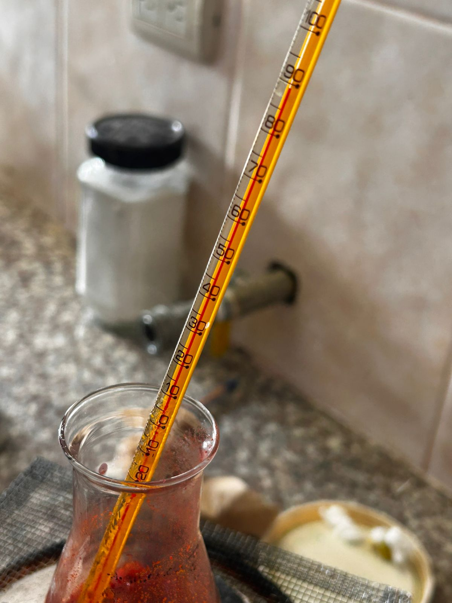
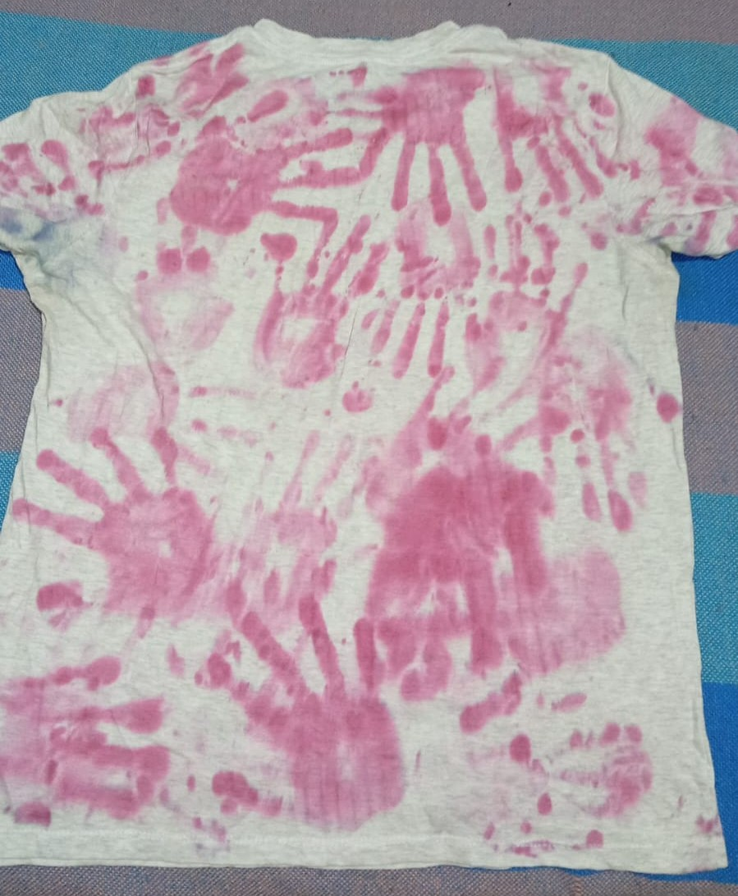
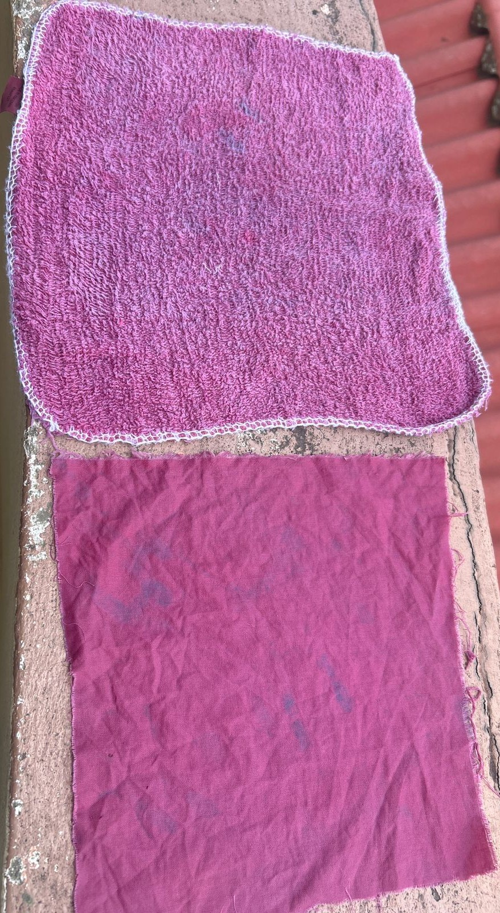

Unidad Educativa Chordeleg
Experimentación con Pigmentos de Hibiscus sabdariffa
Es una iniciativa enfocada en la creación de tintes ecológicos a partir de la flor de Jamaica. Buscamos alternativas sostenibles que reduzcan el impacto químico en el teñido de textiles, combinando métodos tradicionales con procesos científicos de laboratorio.



Se logró un tinte vibrante y de origen 100% natural. En las pruebas caseras con vinagre, el color resistió excelentemente los lavados. En laboratorio, el curado con leche permitió una gran intensidad inicial, aunque el acabado final fue más opaco comparado con el método del vinagre.

2do Bachillerato - Paralelo "C"